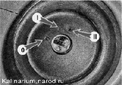
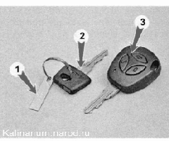

| 
Ключ в замке зажигания может занимать следующие положения:
0 («выключено») при таком положении ключа зажигания могут быть включены следующие потребители: наружное освещение, передние противотуманные фары, сигнализация дальним светом фар, аварийная сигнализация, прикуриватель и аудиосистема. При вынутом ключе блокируется вал рулевого управления (для его блокировки необходимо повернуть рулевое колесо до срабатывания запорного стержня). Для разблокировки вала рулевого управления вставляем ключ в замок зажигания и, слегка поворачивая рулевое колесо вправо-влево, переводим ключ в положение I.
При движении автомобиля не выключайте двигатель и не вынимайте ключ из замка зажигания, это приведет к блокировке руля и потере управляемости.
1 («зажигание») — включены электрические цепи всех потребителей, кроме стартера. Ключ не вынимается.
При неработающем двигателе не оставляйте ключ в положении I на длительное время: это может привести к разряду аккумуляторной батареи.
Перед запуском двигателя (поворотом ключа в положение II) сделайте паузу в течение нескольких секунд (особенно после длительной стоянки): это позволит электробензонасосу создать необходимое давление в топливной рампе и облегчит запуск двигателя.II («стартер») — включены электрические цепи всех потребителей для запуска двигателя. После запуска двигателя ключ необходимо отпустить — он автоматически вернется в положение I.
Выключатель (замок) зажигания имеет блокировку, не позволяющую включить стартер при работающем двигателе. Для повторного запуска двигателя после неудачной попытки ключ в выключателе необходимо сначала перевести в положение О, а затем повторить попытку. Автомобиль оборудован электронной противоугонной системой АПС-б — иммобилайзером. Датчик иммобилайзера установлен в замок зажигания. Контрольная лампа иммобилайзера установлена в щиток приборов, а в блок управления встроен зуммер для подачи звуковых сигналов. В ключи зажигания встроены чипы, с которых датчик иммобилайзера считывает коды, снимающие запретна запуск двигателя.
Автомобиль комплектуется двумя ключами: рабочим и обучающим. Рабочий ключ предназначен для повседневного использования. Обучающий ключ предназначен для активации иммобилайзера и системы дистанционного управления, а также для запуска двигателя в случае утери или неисправности рабочего ключа. При выключении зажигания обучающим ключом начинает мигать контрольная лампа иммобилайзера.
Ключи, прилагаемые к автомобилю:

1 - табличка с номером шифра ключа;
2 — обучающий ключ иммобилайзера;
3 — рабочий ключ иммобилайзера
|